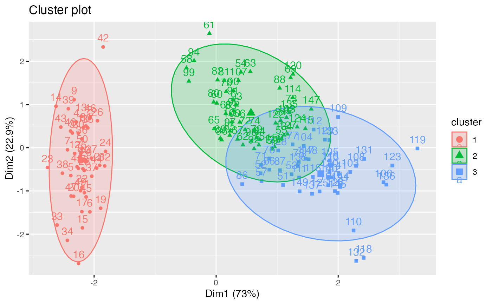
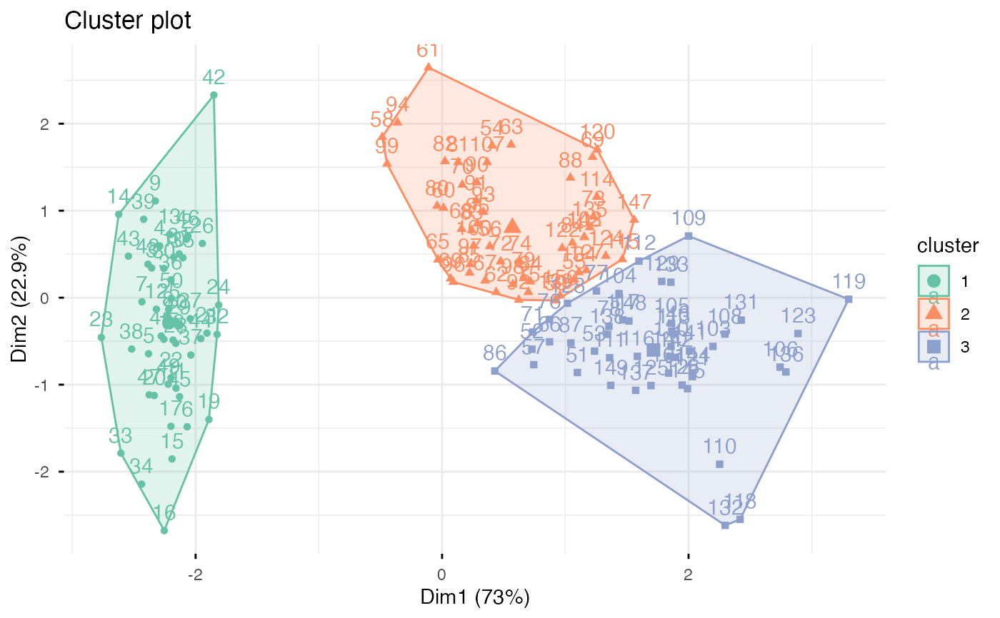

fviz_cluster.RdProvides ggplot2-based elegant visualization of partitioning methods including kmeans [stats package]; pam, clara and fanny [cluster package]; dbscan [fpc package]; Mclust [mclust package]; HCPC [FactoMineR]; hkmeans [factoextra]. Observations are represented by points in the plot, using principal components if ncol(data) > 2. An ellipse is drawn around each cluster.
fviz_cluster(object, data = NULL, choose.vars = NULL, stand = TRUE, axes = c(1, 2), geom = c("point", "text"), repel = FALSE, show.clust.cent = TRUE, ellipse = TRUE, ellipse.type = "convex", ellipse.level = 0.95, ellipse.alpha = 0.2, shape = NULL, pointsize = 1.5, labelsize = 12, main = "Cluster plot", xlab = NULL, ylab = NULL, outlier.color = "black", outlier.shape = 19, outlier.pointsize = pointsize, outlier.labelsize = labelsize, ggtheme = theme_grey(), ...)
| object | an object of class "partition" created by the functions pam(), clara() or fanny() in cluster package; "kmeans" [in stats package]; "dbscan" [in fpc package]; "Mclust" [in mclust]; "hkmeans", "eclust" [in factoextra]. Possible value are also any list object with data and cluster components (e.g.: object = list(data = mydata, cluster = myclust)). |
|---|---|
| data | the data that has been used for clustering. Required only when object is a class of kmeans or dbscan. |
| choose.vars | a character vector containing variables to be considered for plotting. |
| stand | logical value; if TRUE, data is standardized before principal component analysis |
| axes | a numeric vector of length 2 specifying the dimensions to be plotted. |
| geom | a text specifying the geometry to be used for the graph. Allowed values are the combination of c("point", "text"). Use "point" (to show only points); "text" to show only labels; c("point", "text") to show both types. |
| repel | a boolean, whether to use ggrepel to avoid overplotting text labels or not. |
| show.clust.cent | logical; if TRUE, shows cluster centers |
| ellipse | logical value; if TRUE, draws outline around points of each cluster |
| ellipse.type | Character specifying frame type. Possible values are
'convex', 'confidence' or types supported by
|
| ellipse.level | the size of the concentration ellipse in normal
probability. Passed for |
| ellipse.alpha | Alpha for frame specifying the transparency level of fill color. Use alpha = 0 for no fill color. |
| shape | the shape of points. |
| pointsize | the size of points |
| labelsize | font size for the labels |
| main | plot main title. |
| xlab, ylab | character vector specifying x and y axis labels, respectively. Use xlab = FALSE and ylab = FALSE to hide xlab and ylab, respectively. |
| outlier.pointsize, outlier.color, outlier.shape, outlier.labelsize | arguments for customizing outliers, which can be detected only in DBSCAN clustering. |
| ggtheme | function, ggplot2 theme name. Default value is theme_pubr(). Allowed values include ggplot2 official themes: theme_gray(), theme_bw(), theme_minimal(), theme_classic(), theme_void(), .... |
| ... | other arguments to be passed to the functions
|
return a ggpplot.
#> Sepal.Length Sepal.Width Petal.Length Petal.Width Species #> 1 5.1 3.5 1.4 0.2 setosa #> 2 4.9 3.0 1.4 0.2 setosa #> 3 4.7 3.2 1.3 0.2 setosa #> 4 4.6 3.1 1.5 0.2 setosa #> 5 5.0 3.6 1.4 0.2 setosa #> 6 5.4 3.9 1.7 0.4 setosa# Remove species column (5) and scale the data iris.scaled <- scale(iris[, -5]) # K-means clustering # +++++++++++++++++++++ km.res <- kmeans(iris.scaled, 3, nstart = 10) # Visualize kmeans clustering # use repel = TRUE to avoid overplotting fviz_cluster(km.res, iris[, -5], ellipse.type = "norm")# Change the color palette and theme fviz_cluster(km.res, iris[, -5], palette = "Set2", ggtheme = theme_minimal())if (FALSE) { # Show points only fviz_cluster(km.res, iris[, -5], geom = "point") # Show text only fviz_cluster(km.res, iris[, -5], geom = "text") # PAM clustering # ++++++++++++++++++++ require(cluster) pam.res <- pam(iris.scaled, 3) # Visualize pam clustering fviz_cluster(pam.res, geom = "point", ellipse.type = "norm") # Hierarchical clustering # ++++++++++++++++++++++++ # Use hcut() which compute hclust and cut the tree hc.cut <- hcut(iris.scaled, k = 3, hc_method = "complete") # Visualize dendrogram fviz_dend(hc.cut, show_labels = FALSE, rect = TRUE) # Visualize cluster fviz_cluster(hc.cut, ellipse.type = "convex") }